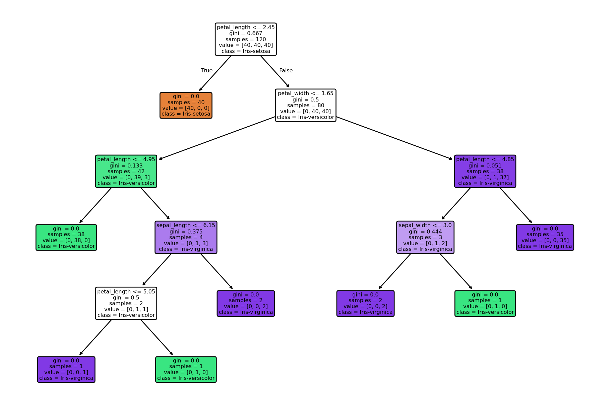

import pandas as pd
file_path = '../data/processed/iris.csv'
df = pd.read_csv(file_path, sep = ',')Entscheidungsbaum-Klassifikation mit dem Iris-Datensatz
In diesem Notebook wird ein Entscheidungsbaum mit dem Iris-Datensatz trainiert, evaluiert und visualisiert. Der Fokus liegt auf Interpretierbarkeit und praktischer Anwendung klassischer ML-Methoden.
- Entscheidungsbäume sind ein zentrales Werkzeug des maschinellen Lernens
- sie sind leicht interpretierbar, visualisierbar und robust gegenüber fehlenden Werten
- hier wird ein Entscheidungsbaum zur Klassifikation mit dem Iris-Datensatz aufgebaut
Bibliotheken importieren und Daten laden
Der Iris-Datensatz stammt aus dem UCI Machine Learning Repository. Er enthält Messdaten zu Kelch- und Blütenblättern dreier Iris-Arten. Ziel ist die Vorhersage der Art (‘species’) anhand von vier Merkmalen:
- sepal_length, sepal_width, petal_length, petal_width
Die Daten werden aus einer CSV-Datei geladen: - ‘file_path’ muss auf die CSV-Datei zeigen - Trennzeichen ist Semikolon (;)
Für die spätere Modellierung mit einem Entscheidungsbaum: - X enthält alle erklärenden Variablen - y enthält das Klassenlabel (species)
Feature-Ziel-Trennung
Aufteilen in Merkmale (X) und Zielvariable (y) - die Zielvariable ‘species’ soll vorhergesagt werden - alle anderen Spalten werden als Prädiktoren verwendet
features = [c for c in df.columns if c != 'species']
X = df[features]
y = df['species']Aufteilen in Trainings- und Testdaten
Wichtig: Testdaten dürfen nicht im Training verwendet werden, um mögliches Overfitting zu erkennen
from sklearn.model_selection import train_test_split
X_tr, X_tst, y_tr, y_tst = train_test_split(
X, y, test_size = 0.2, random_state = 42, stratify = y
)Die Funktion train_test_split mischt die Daten zufällig und teilt sie auf: - X_tr, y_tr: Trainingsdaten (80 %) - X_tst, y_tst: Testdaten (20 %) - random_state sorgt für Reproduzierbarkeit - stratify = y sorgt für gleiche Klassenverteilung in Train und Test
Entscheidungsbaum definieren und trainieren
- Importieren des
DecisionTreeClassifieraus scikit-learn - diese Klasse implementiert den CART-Algorithmus zur Klassifikation
- standardmäßig wird das Kriterium “gini” verwendet (Gini-Unreinheit)
- Alternative: z. B. ‘entropy’ für die ID3-ähnliche Variante
Trainieren des Modells mit den Trainingsdaten - X_tr: Merkmale der Trainingsdaten (n_samples x n_features) - y_tr: Klassenlabels der Trainingsdaten (n_samples)
Die Methode .fit() baut den Entscheidungsbaum rekursiv auf: - wählt pro Knoten das optimale Feature zur Aufteilung - verwendet dabei ein Gütemaß (Gini oder Entropie) - stoppt, wenn Tiefe oder Datenmenge zu gering wird
from sklearn.tree import DecisionTreeClassifier
model = DecisionTreeClassifier()
model.fit(X_tr, y_tr)DecisionTreeClassifier()In a Jupyter environment, please rerun this cell to show the HTML representation or trust the notebook.
On GitHub, the HTML representation is unable to render, please try loading this page with nbviewer.org.
Parameters
| criterion | 'gini' | |
| splitter | 'best' | |
| max_depth | None | |
| min_samples_split | 2 | |
| min_samples_leaf | 1 | |
| min_weight_fraction_leaf | 0.0 | |
| max_features | None | |
| random_state | None | |
| max_leaf_nodes | None | |
| min_impurity_decrease | 0.0 | |
| class_weight | None | |
| ccp_alpha | 0.0 | |
| monotonic_cst | None |
Hinweise:
Der DecisionTreeClassifier basiert auf dem CART-Algorithmus: - “Greedy”-Verfahren: trifft lokal optimale Entscheidungen beim Splitten - verwendet standardmäßig den Gini-Index zur Messung der Reinheit
Alternative Kriterien: - criterion = 'entropy': verwendet Informationsgewinn, ähnlich ID3 - geeignet für kategoriale Merkmale, erzeugt aber oft tiefere Bäume
Wichtige Parameter zur Steuerung der Baumkomplexität: - max_depth: maximale Tiefe des Baumes - min_samples_split: minimale Anzahl von Beispielen, um einen Knoten zu teilen - min_samples_leaf: minimale Anzahl von Beispielen in einem Blatt - max_features: maximale Anzahl der Merkmale, die beim Split berücksichtigt werden - ccp_alpha: Kostenkomplexitäts-Pruning-Parameter (zur Vermeidung von Overfitting)
Beispiel für Pruning: model = DecisionTreeClassifier(ccp_alpha = 0.05)
Wichtig: - .fit(X, y) darf nur auf den Trainingsdaten aufgerufen werden! - Ein mehrfaches Aufrufen mit verschiedenen Daten führt zu Overfitting
Vorhersage auf Testdaten
- das Modell ist bisher nur auf den Trainingsdaten
X_tr,y_trtrainiert worden - nun wenden wir es auf neue, ungesehene Daten an, um seine Generalisierbarkeit zu prüfen
predict()nimmt als Input die MerkmalsmatrixX_tst(Form:[n_samples, n_features]) und gibt ein 1D-Array mit den vorhergesagten Klassenlabels zurück
y_predicted = model.predict(X_tst)Konfusionsmatrix erstellen
Die Matrix ist quadratisch: (n_classes x n_classes) - die confusion_matrix vergleicht wahre Klassenlabels (y_tst) - mit den vom Modell vorhergesagten Labels (y_predicted) - Zeilen: wahre Klassen - Spalten: vorhergesagte Klassen - Diagonalelemente: korrekt klassifizierte Instanzen - Off-Diagonalelemente: Fehlklassifikationen
from sklearn.metrics import confusion_matrix
matrix = confusion_matrix(y_tst, y_predicted)
print('Confusion Matrix:')
print(matrix)Confusion Matrix:
[[10 0 0]
[ 0 9 1]
[ 0 1 9]]Interpretation:
- Je höher die Diagonaleinträge im Vergleich zu den Nebendiagonalen, desto besser
- Analyse zeigt, welche Klassen verwechselt werden
- Besonders wichtig bei Klassen mit ähnlicher Ausprägung oder bei Imbalancen
Klassifikationsbericht
- classification_report gibt eine Übersicht über die wichtigsten Metriken:
- precision: Anteil der korrekt vorhergesagten Positiven
= TP / (TP + FP) - recall (Sensitivität): Anteil der erkannten Positiven unter allen tatsächlichen Positiven
= TP / (TP + FN) - f1-score: harmonisches Mittel aus precision und recall
- support: Anzahl der wahren Instanzen pro Klasse
from sklearn.metrics import classification_report
report = classification_report(
y_tst, y_predicted, digits = 3) #3 Nachkommastellen
print('Classification Report:')
print(report)Classification Report:
precision recall f1-score support
Iris-setosa 1.000 1.000 1.000 10
Iris-versicolor 0.900 0.900 0.900 10
Iris-virginica 0.900 0.900 0.900 10
accuracy 0.933 30
macro avg 0.933 0.933 0.933 30
weighted avg 0.933 0.933 0.933 30
Detaillierte Erläuterungen zu den Metriken
- Precision: Gibt an, wie zuverlässig positive Vorhersagen sind. Wichtig, wenn falsch-positive Ergebnisse vermieden werden sollen. Beispiele:
- Spamfilter (falsch-positive = wichtige Mails fälschlich als Spam)
- medizinische Tests (gesunde Patienten fälschlich als krank)
- Betrugserkennung (legitime Transaktionen blockiert)
- Recall: Gibt an, wie viele der tatsächlichen Positiven erkannt wurden. Wichtig, wenn falsch-negative Ergebnisse vermieden werden sollen. Beispiele:
- Cybersicherheit (unerkannter Angriff = großes Risiko)
- Krankheitsdiagnose (kranker Patient nicht erkannt)
- Verbrechensaufdeckung (unerkannte Straftat)
- F1-Score: Kombiniert precision und recall -> Kompromissmaß. Sinnvoll bei:
- Imbalancierten Klassen
- Zielkonflikten zwischen precision und recall
- macro avg: Ungewichteter Durchschnitt der Metriken über alle Klassen weighted avg: Durchschnitt über Klassen unter Berücksichtigung des supports (Klassenhäufigkeit)
Gesamtziel:
- hohe Werte bei precision, recall und f1-score -> gutes, ausgewogenes Modell
- Einseitige Schwächen (z. B. recall niedrig bei einer Klasse) -> gezielte Nachjustierung nötig
Visualisierung des Entscheidungsbaums
- Import der benötigten Visualisierungsbibliotheken
- Erzeugen einer neuen Figure für den Plot
- mit
plt.figure()wird ein neuer Grafikbereich erzeugt - der Parameter
figsizesteuert die Abmessung in Zoll: (Breite, Höhe) - hier: 12 Zoll breit, 8 Zoll hoch -> gut geeignet für größere Bäume
- mit
plot_tree()erzeugt eine visuelle Darstellung des gesamten Entscheidungsbaums- Parameter:
model: das trainierte DecisionTreeClassifier-Modellfeature_names: Liste mit Namen der Eingabemerkmale (X-Spaltennamen)class_names: Klassenbezeichner für die Zielvariablefilled = True: Knoten werden eingefärbt nach dominierender Klasserounded = True: Knoten haben abgerundete Ecken → bessere Lesbarkeitfontsize = 6: Schriftgröße innerhalb der Baumknoten
- Anzeigen der Grafik:
plt.show()öffnet ein neues Fenster (oder zeigt inline in Jupyter die Grafik); ohneplt.show()wird der Baum zwar intern erstellt, aber nicht sichtbar gemacht
Optional:
Plot als Datei speichern (nach plt.show()) - das Format wird automatisch aus dem Dateinamen abgeleitet - Beispiel: PNG für Präsentationen, PDF für Publikationen - Parameter: + dpi = 300: hohe Auflösung, gut für Druck + bbox_inches = 'tight': reduziert unnötigen Rand
from sklearn.tree import plot_tree
import matplotlib.pyplot as plt
plt.figure(figsize=(12, 8))
plot_tree(
model,
feature_names=features,
class_names=model.classes_,
filled=True,
rounded=True,
fontsize=6
)
plt.show()
plt.savefig('../figs/baumstruktur.png', dpi=300, bbox_inches='tight')
<Figure size 672x480 with 0 Axes>Zusatzhinweise zur Interpretation und Verwendung
Die Darstellung hilft, das Entscheidungsverhalten des Modells nachzuvollziehen: - Jeder Knoten zeigt die Aufspaltung basierend auf einem Merkmal (feature) - “gini” zeigt die Unreinheit im Knoten (je näher an 0, desto reiner) - “samples”: Anzahl der Trainingsdaten im Knoten - “value”: Verteilung der Klassen im Knoten - Farbe: stärker gefärbte Knoten = klar dominierende Klasse - ccp_alpha kann verwendet werden, um Pruning zu steuern und Overfitting zu vermeiden
Einsatzmöglichkeiten: - Modellinterpretation (z. B. bei erklärungsbedürftigen Anwendungen) - Fehleranalyse (z. B. bei Überanpassung durch zu tiefe Bäume) - Kommunikation in Präsentationen oder Berichten
Alternative Ausgabe:
Falls du eine PDF-Datei des Baums erzeugen willst, kannst du auch export_graphviz() mit graphviz verwenden (z. B. für komplexere Bäume). Dies ist besonders nützlich bei tiefen Bäumen, die mit plot_tree() schwer lesbar sind.